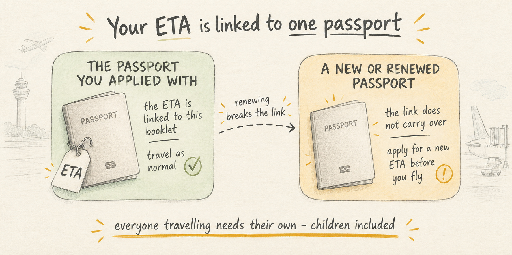

UK ETA: Which Passport Is Yours Tied To?
Travel Document Vault
Key Takeaways
- A UK ETA is tied to your passport number. When you renew your passport and get a new number, your old ETA becomes invalid.
- You must travel on the exact passport you applied with. A new passport means you need a new ETA before travelling.
- Every person needs their own ETA - including children and babies. There is no family ETA or dependent entry.
- The Home Office recommends applying at least 3 working days ahead. This is a recommendation, not a processing guarantee.
- An ETA is permission to travel, not entry. Border officers can refuse entry even with a valid ETA.
The UK ETA system is straightforward on the surface: you apply, you pay, you travel. There's one rule underneath that, though, and it isn't obvious until it matters: your ETA is tied to the specific passport number on your application. When you renew that passport and receive a new passport number, your ETA stops being valid. You will need to apply again on your new passport before your trip.
This is a document-tracking problem. You have two expiry dates to watch: your passport's renewal and your ETA's validity. Miss the connection between them and you could be stopped at the airport days before you travel.
Who Needs a UK ETA Before Travelling
If you are a national of the US, Canada, Australia, New Zealand, or a country in the EU or European Economic Area, you are likely to need a UK ETA. The scheme was enforced from 25 February 2026 for most non-visa nationals.
Some people are exempt: Irish citizens do not need one, and people with UK immigration status - a visa, settled status, or indefinite leave to remain - do not need to apply either. People with dual nationality, those with Common Travel Area rights, and a few other groups have different rules depending on how they travel.
Check your own situation with the Home Office before booking. An ETA requirement is not hard to meet, but it only takes one exemption category you were unaware of to either waste money on an unnecessary application or get stopped at check-in.
What the ETA Is Actually Attached To
Your UK ETA is attached to your passport number, not to you as a person. When you apply, the Home Office links your approval to a specific passport number. Travelling on a different passport - a newly renewed one, a second passport, an emergency replacement - means travelling on an ETA that is not tied to that document.
This is different from visas in many countries, which are often tied to a person and printed in a new passport when you renew. A UK ETA is digital and passport-specific, so a new passport number means a new ETA is needed.
In practice, if your passport expires or you renew it for any reason before your trip, you cannot use your old ETA on your new passport. You must apply again and get approval before you travel, since there is no automatic transfer.
Travel Document Vault shows your passport expiry date and alerts you when it is approaching. Knowing when your passport is set to expire gives you time to plan your renewal and reapply for your ETA before your trip. Download on the App Store and Google Play.
What Happens When You Renew Your Passport
Renewing a passport is routine in itself. But the ETA complication is real if your trip is coming up soon.
When you renew your passport, your own passport authority issues a new document with a new passport number. Your old ETA, which is linked to your old passport number, becomes invalid the moment you start using the new passport for travel.
Here is the timeline to plan:
- Your passport expiration date is approaching.
- You apply to renew your passport in your home country.
- Your new passport arrives (processing times vary, see the guide on passport renewal times).
- As soon as you have your new passport in hand, apply for a new UK ETA with your new passport number.
- Wait for Home Office approval (the Home Office recommends at least 3 working days, though it can be faster).
- Travel with your new passport and new ETA.
The risk is in step 5. If your trip is in 10 days and your new passport arrives today, you have a narrow window to renew and get ETA approval. Starting the renewal process with less than 2-3 weeks before your trip creates real time pressure.

Children and Babies Need Their Own
Every person, including infants, needs their own UK ETA. There is no family ETA and no way to add dependents to someone else's application.
This means for a family of four, you are submitting four separate applications and paying four separate fees. More importantly, you are tracking four approval statuses, four expiry dates and four passport numbers, all of them separately.
Children's passports also expire faster than adult passports - typically every 5 years instead of 10. A baby issued a passport in 2023 will have a new passport number by 2028, which means a new ETA application before then. If a family trip is planned when that child is 5, the passport and ETA may both be within a year or two of expiry.
Before booking any family trip to the UK, check every family member's passport expiry date and ETA status. One person short on validity can prevent the whole family from boarding.
How Far Ahead to Apply
The Home Office recommends applying at least 3 working days before you travel. This is a guideline, not a guaranteed processing time. Many applications are approved faster. Some take longer, and approval is not automatic - the Home Office can ask for extra information or refuse an application.
Plan as if 3 working days is the minimum, not the target. Applying a week ahead from outside the UK gives you a reasonable cushion, while applying 48 hours before your flight means assuming best-case processing with no backup if anything goes wrong.
If your ETA application is refused, the Home Office says you can apply again - but doing so in the days before your flight is not a practical fallback. Apply well ahead, and treat 3 working days as the minimum cushion, not the target.
The safer approach: apply as soon as you have your final passport - ideally 2-3 weeks before you travel. This gives you a full working buffer and time to solve any issues if the Home Office asks for clarification.
An ETA Is Permission to Travel, Not a Promise of Entry
A UK ETA says the Home Office approves your travel to the UK, but that does not guarantee you will be allowed through the border.
A border officer can still refuse entry. They can ask questions about your purpose, your financial situation, your ties to your home country, or previous travel patterns. If they are not satisfied, they can deny entry even though your ETA is valid. This is rare for tourists, but it happens.
An ETA is also not a visa - it does not tell you how long you can stay. ETA holders from most non-visa countries can stay for up to 6 months as a visitor, but the border officer sets the actual length of stay when you arrive, not the ETA itself.
Related ETA and Travel Document Topics
A UK ETA is one of several digital travel permissions now in use. If you are planning travel across multiple countries, understand the difference between an ETA and a visa. They look similar in process but serve different purposes.
The EU is rolling out its own digital travel permission system called ETIAS for non-EU visitors - similar in concept to the UK ETA but with different rules and requirements. If your trip includes both the UK and Europe, you could need both.
Frequently Asked Questions
What is a UK ETA?
A UK ETA (Electronic Travel Authorisation) is a digital travel permission the UK introduced in 2025. The scheme was enforced from 25 February 2026 for most non-visa nationals. It is not a visa - it is permission to travel. Border officers can still refuse entry even if you have a valid ETA.
Who needs to apply for a UK ETA?
Most nationals from non-visa countries need to apply for a UK ETA, including citizens of the US, Canada, Australia, New Zealand, and the EU. Some people are exempt: Irish citizens can travel freely, people with UK immigration status do not need one, and a few other groups have different rules. Check which category you fall into with the Home Office before assuming you need to apply.
What happens to my UK ETA if I renew my passport?
Your UK ETA is tied to the specific passport number you apply with. If you renew your passport and receive a new passport number, your old ETA becomes invalid. You will need to apply for a new ETA on your new passport before you travel. Apply for your new ETA as soon as your new passport arrives. The Home Office says most decisions arrive within a day, though it can take up to 3 working days.
Do children need their own UK ETA?
Yes, every person needs their own ETA, including babies and young children. Each person who will be travelling must have their own approved ETA tied to their own passport number. You cannot add family members to a single ETA application.
Is a UK ETA a guarantee of entry?
No. A UK ETA gives you permission to travel to the UK, but border officers still decide whether to allow you to enter. You could have a valid ETA and still be refused entry if officers think you do not meet the entry requirements or pose a risk.